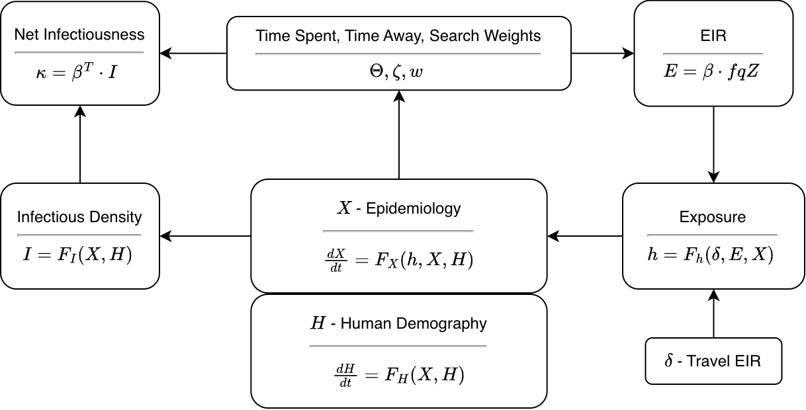

The XH Component
Models for Human or Vertebrate Host Infection, Immuno-Epidemiology & Demography
Source:vignettes/XH-interface.Rmd
XH-interface.RmdThe XH component was designed for human malaria
epidemiology, defined in a narrow sense to include exposure, infection
dynamics, immunity, disease, infectiousness, diagnostics and detection.
In the broader sense, human malaria epidemiology also includes malaria
transmission dynamics, but these aspects are handled by other parts of
ramp.xds.
The XH component also handles models for the demography, infection dynamics, and immunity for other mosquito-borne diseases.
A library of XH modules can be found in ramp.library.
This vignette takes a deep dive into the design and structure of the XH component. It is useful for anyone who wants to learn more about how the code works.

Overview
The XH component handles demography and epidemiology. The software was designed to handle the epidemiology of Plasmodium falciparum in a human population, but the interface has the capability of handling other models for parasites and pathogens in human or vertebrate host populations.
The interface handles malaria epidemiology in a narrow sense: it includes exposure, infection, disease, immunity, infectiousness, and diagnostics and detection. In the broad sense, malaria epidemiology includes transmission dynamics and control, but these are handled by other parts of the model.
Each XH module is defined by:
-
An X component - disease dynamics
\(X\): a state space describing infection and immune states, and possibly other variables
dynamics: a system of equations describing the state transitions
infectivity: a function \(F_b(X)\) to compute partial immunity
infectiousness: a function \(F_I(X)\) describing the effective infectious density
-
An H component - demography
births: population births configured through the demographic interface
deaths and other transitions: demographic processes configured through the demographic interface
Since the X component is embedded in the H component, the two processes are handled together.
The X Component
Models for disease dynamics are developed around a general notion of exposure defined by two metrics: daily entomological inoculation rates (dEIR or \(E\)) and either
the daily force of infection (dFoI or \(h\)), the hazard rate for infection for humans / hosts who are susceptible to infection.
the daily attack rate (dAR or \(1-e^{-h}\)), the daily probability of infection for humans / hosts who are susceptible to infection.
Some of the X component is handled in the exposure interface that translates local dEIR into a measure of the total dFoI.
Disease dynamics are specified by one of two methods:
for systems of differential equations,
dXHdtcomputes the derivatives using the dFoI.for discrete-time systems,
Update_XHtupdates the state variables using the dAR.
All XH modules must include a function that computes effective infectious host density, \(F_I(X, H)\). Dividing this quantity by host density gives the fraction of bites expected to infect a perfectly competent mosquito.
All XH modules must include a function that computes
true prevalence from the states using F_prevalence.
Methods for predicted observed prevalence by light microscopy, rapid diagnostic test, and PCR are available for modules where those outputs are relevant and implemented. The module’s skill set records the diagnostic capabilities it supports.
Modules that use the shared mass-treatment setup initialize ports for mass drug administration and mass screen and treat. A module supports those interventions only if its state updates use the treatment terms; supported capabilities are recorded in its skill set.
The H Component
The H component handles demographic change in a
model coupled to disease dynamics. A large number of models have been
developed that assume human / host population size is static. In
ramp.xds, a module must
either:
-
handle dynamically changing populations, and
the equations handle demographic changes
a constant population density model by default;
OR report that demographic change is not part of its skill set
Models in ramp.xds (and in the
satellite package ramp.library) follow a
convention in modeling demographic changes. If X had
\(N_X\) mutually exclusive and
collectively exhaustive states, the modules implement \(N_X-1\) equations for the state variables.
The compartment not computed is the class that receives newborns,
denoted \({X}_1\) (or one of these, if
two or more classes get newborns.)
These models generally use \(H\) to
denote the human / host population density. Demography is configured
through the shared demographic
interface, including Births(t, y, xds_obj, i) and
Deaths(t, H, xds_obj, i). For differential equation models,
the population equation follows the form:
\[\frac{dH}{dt} = \mathrm{Births}(t,y) - \mathrm{Deaths}(t,H)\]
Each modeled state variable is subject to demographic deaths, as implemented by the module. Disease-induced mortality is not a universal part of the interface and is included only by modules that implement it.
The value of \({X}_1\) is computed and assigned a name using:
\[X_{1} = H - \sum_{i>1} X_i.\]
By default, the shared demographic setup uses no births or deaths; non-trivial demographic processes are configured through the demographic setup functions.
The demographic operator can also be modified to handle other dynamical transitions among classes, which is handled through models for cohort dynamics and principled stratification.
Required Functions
Each XH module implements the methods needed to connect its model to the XH interface. The exact method set depends on whether the module uses differential equations or discrete-time updates; some outputs and analysis methods are optional.
Some of these required functions are S3 class functions
in human-XH-interface.R. Others are defined for each
module.
One good example is the SIS module, posted in the
ramp.xds github repository human-XH-SIS.R.
The required functions deal with various tasks for model building and solving: constructing the XH model object; the dynamics; the parameters; the variables and their initial values; computing terms and standard outputs; and consistency checks. Optional outputs include other metrics; functions to compute steady states; and module specific functions to visualize the outputs.
Each module is defined by a string, generically called
XHname, that identifies the module: e.g.
SIS.
Dynamics
At least one of the following is implemented, depending on whether the model family is a system of differential equations or a discrete-time system:
-
dXHdt.XHname:: computes derivatives for a differential equation model. The method receivest,y,xds_obj, andi; the daily FoI is available inxds_obj$terms$FoI[[i]]. The function is set up to be solved bydeSolve::odeordeSolve::dede.
foi <- xds_obj$terms$FoI[[i]]-
Update_XHt.XHname:: updates and returns the state variables for a discrete-time model. The method receivest,y,xds_obj, andi; the daily attack rate is available inxds_obj$terms$AR[[i]].
ar <- xds_obj$terms$AR[[i]]State-variable extraction
-
get_XH_vars.XHname- extracts variables from the state vector \(y\) and returns them by name for use during model solving. Users rarely need to call it directly.
Dynamical Terms
These methods provide quantities used by the rest of the model.
F_I.XHname- computes effective infectious host density, used by the blood-feeding and transmission interfaces to compute \(\kappa.\)F_H.XHname- returns human/host population density.F_infectivity.XHname- computes the probability a host becomes infected per infectious bite.Exposureuses this method to translate local and travel EIR into FoI.
XH Model Object
Each module has a pair of functions that set up a structured list
called the XH model object. The object is a list that
is assigned to a class that dispatches the S3
functions described below. It is a compound list, where some of the
sub-lists are assigned their own class that dispatch other
S3 functions.
make_XH_obj_XHname:: creates the module-specific XH model object, including its parameters and class:setup_XH_obj.XHname:: attaches that object toxds_obj$XH_obj[[i]], sets initial values, and initializes shared interface features such as demographic setup, mass-treatment ports, time away, and travel EIR.setup_XH_ix.XHname:: assigns indices to the model variables. This method is called as part of model setup.
Parameters
get_XH_pars.XHnameis a utility to inspect the values of the parameters.change_XH_pars.XHnamechanges the values of some parameters. It is designed to be used after setup. New parameter values are passed by name in a list calledoptions.
Initial Values
A set of functions sets up or changes the initial values for the state variables.
make_XH_inits_XHname- each model must include a function that makes a set of initial values as a named list. This function does not belong to anyS3class, so it can take any form. The function should supply default initial values for all the variables. These can be overridden by passing new initial values inoptions.setup_XH_inits.XHname- callsmake_XH_inits_XHname. The setupoptionsare passed to override default values. The initial values are stored asXH_obj$inits; this method is called bysetup_XH_obj.XHnameduring setup.get_XH_inits- returns stored initial values for the selected host species directly, without S3 dispatch.change_XH_inits.XHname- a utility to change the initial values.
Variable indices
Index setup assigns each state variable its position in the full model state vector.
-
setup_XH_ix.XHname- assigns variable indices and stores them as a named list atxds_obj$XH_obj[[i]]$ix. It updatesxds_obj$max_ixand returns the model object.
Indexing methods allocate consecutive blocks after the existing
maximum. For XH, each block normally has length nStrata[i].
Document the block order and lengths, including auxiliary variables.
Store indices on the selected module at
xds_obj$XH_obj[[i]]$ix, and use that location in state
extraction, output parsing, and delayed-state lookups.
Standard Outputs
get_XH_orbits(xds_obj, i = 1) retrieves saved, parsed
orbits (trajectories) after solving for XH for the
selected species. It returns a list of module-specific outputs with
time added from xds_obj$outputs$time. It reads
xds_obj$outputs$orbits$XH[[i]]; it does not parse outputs
or modify the model.
-
parse_XH_orbits.XHname- this function is likeget_XH_varsbut it parses the matrix of outputs returned byxds_solve.
Observational processes and analysis
Each module must output a few key quantities:
F_prevalence.XHname- computes true prevalence.F_ni.XHname- computes net infectiousness (NI) for each stratum. The method is called after solving, and NI is attached to the parsed outputs. The formula is module-specific.get_HTC.XHname- computes human transmitting capacity, used by downstream analyses that compute threshold conditions.
Diagnostic Outputs
The interface provides methods for predicted prevalence by diagnostic method when these outputs are relevant and implemented by the module.
F_pr_obs(vars, XH_obj) is the generic for predicted
observed prevalence, dispatching on XH_obj. All XH modules
except hMoI support a test-positivity parameter
q (default 0.8) and compute observed
prevalence as q * F_prevalence(vars, XH_obj). The
SIS method therefore computes q * I / H.
Retrieve this output after solving with
get_PR(xds_obj, method = "obs"). For hMoI,
observed prevalence is apparent prevalence 1 - exp(-m2),
without a test-positivity parameter q. The three diagnostic
methods below are compatibility aliases for F_pr_obs in SIS
and hMoI, not distinct diagnostic models.
F_pfpr_by_lm.XHname:: output predicted prevalence by light microscopyF_pfpr_by_rdt.XHname:: output predicted prevalence by rapid diagnostic testF_pfpr_by_pcr.XHname:: output predicted prevalence by PCR
Consistency Checks
Some modules in ramp.xds or
ramp.library have been included for
various reasons. Not all of those models are capable of being extended.
To help users avoid using models in ways that are not appropriate, we
developed two function classes:
check_XH.XHname:: provides a hook for module-specific checks before solving. Existing methods currently returnxds_objunchanged and perform no checks; the presence of a check method does not guarantee validation.get_skillset_XH.XHname:: returns the module’s capabilities and compatibilities as a list. If a module does not defineUpdate_XHt.XHname, includedts = FALSE.
XH skill sets use these logical fields, in this order:
dts, xde, delay,
demography, malaria, pf_lm,
pf_rdt, pf_pcr, mda, and
msat. The pf_* fields indicate support for the
corresponding diagnostic prevalence outputs. Models with
malaria = FALSE, including SIR, SIRS, SEIR, SEIRV, and
trivialXH, omit all three pf_* fields. All XH modules
additionally place pr_obs = TRUE after
malaria. SIS and hMoI set all three pf_* flags
to FALSE, because they support observed prevalence without
distinguishing diagnostic methods. The trivialXH
observed-prevalence method returns an empty numeric vector, matching its
true-prevalence method.
Optional Functions
The XH interface also sets up S3
methods for optional functions, but these might not be appropriate for
all models. The module’s get_skillset_XH.XHname method
returns its capabilities and compatibilities as a list.
Steady States
Methods can be defined to compute steady states under static parameter values.
steady_state_X.XHname:: computes steady states for the X component as a function of FoI and H, if appropriate.steady_state_XH.XHname:: computes steady states for the XH component as a function of FoI, if appropriate.
Use “Compute steady states (JJ)” for generic titles
and “Compute steady states for module
(JJ)” for method titles, preserving explicitly retained
titles. Descriptions identify the supplied inputs, module, and supported
equation system. Return documentation identifies the actual type and
state names; do not convert numeric vectors to lists merely to align
documentation. Preserve formulas and model-specific assumptions.
The X and XH generics dispatch on xds_obj$XH_obj[[i]].
For SEIR, SEIRV, SIR, SIRS, SEIS, SIP, and SIPd, the X method delegates
to a module-specific generic such as steady_state_X_SEIR,
which dispatches on xds_obj$xds to select xde
or dts. Both stages forward the host species index. The
former _dts module-class suffixes are no longer used. The X
generic takes foi and fixed host density H;
the XH generic takes foi and requires a module-specific
method. These calculations return values without storing them on the
model object. Flag implementation discrepancies separately.
Documentation conventions
Function order
Use the following order in XH, MY, and L module files and in the implementation sections of their guides. Omit families that do not apply. Shared component files follow the same relative order without moving functions between files.
Keep the module overview/NULL documentation anchor at the very top, after the file-level TODO lists. Order functions below it as follows:
- Dynamics:
dJJdt, thenUpdate_JJt. - State-variable getter:
get_JJ_vars. - Dynamical/interface terms and their parameter accessors, including bionomics followed by effect sizes (MY and L).
- Parameters: module-object constructor and setup, then parameter getter and changer.
- Initial values: constructor, setup, getter, and changer, followed by initial-density accessors.
- Variable-index setup and index getter, then output parser and parsed-output getter.
- Observational processes and analysis functions, including prevalence, diagnostics, HTC, and X/Y analyses where implemented.
- Checks.
- Skill set.
- Steady states: module router, equation-system generic,
xde, thendts. - Plotting functions, line-plotting functions, and remaining helpers.
Move each function with its Roxygen documentation and related comments. Keep file-level review/TODO notes at the top. Do not change definitions, formulas, signatures, or registrations as part of reordering.
This section is the shared documentation style reference for
XH, MY, and L modules
in ramp.xds and ramp.library. The component
vignettes describe their interfaces; the ramp.library
development vignettes provide templates. Keep the guidance and examples
aligned when a convention changes.
Titles
In the patterns below, replace JJ with XH,
MY, or L, and module with the
module class. Use backticks for module names and bold for the component
tag. method_name means the module class, not the full S3
function name.
| Function family | Generic title | Method title |
|---|---|---|
| Skill set | Get the skill set (JJ) | Get the skill set for module
(JJ) |
| Parameter getters | Get parameters (JJ) | Get parameters for module
(JJ) |
| Parameter changers | Change parameters (JJ) | Change parameters for module
(JJ) |
| Checks | Check model (JJ) | Check method_name
(JJ) |
| Derivatives | Compute the derivatives (JJ) | Compute the derivatives for module
(JJ) |
| Discrete-time updates | Update states (JJ) | Update states for module
(JJ) |
| Component-object setup | Set up the module object (JJ) | Set up the module object for module
(JJ) |
| Initial-value setup | Set up initial values (JJ) | Set up initial values for module
(JJ) |
| Initial-value changers | Change initial values (JJ) | Change initial values for module
(JJ) |
| Variable-index setup | Set up variable indices (JJ) | Set up variable indices for module
(JJ) |
| Bionomics (MY and L) | Mosquito bionomics (JJ) | Mosquito bionomics for module
(JJ) |
| Effect sizes (MY and L) | Apply effect sizes (JJ) | Apply effect sizes for module
(JJ) |
Module-object constructors are ordinary functions, not S3 methods.
Their title is “Make a module object for module
(JJ)”.
State-variable getters
Use “Get the state variables (JJ)” for generic
titles and “Get the state variables for module
(JJ)” for method titles. Describe methods as “Extract
the state variables for the module module from
y and return them by name in a list for use during model
solving.” These functions primarily support solver evaluations; users
rarely call them directly. They extract the current state, not initial
values or solver-output matrices.
Use “a named [list] of state variables and module-specific derived quantities” for return descriptions. Document any derived quantities, values obtained from the module object, or matrix/cohort shapes explicitly. Put index storage in method notes; put dispatch and the solver-facing usage explanation in generic notes. Preserve existing references and flag return-shape discrepancies without silently changing implementations. Trivial methods retain their accurate empty-list descriptions.
Output parsers
Orbit getters use “Get orbits (JJ)” for titles, with
JJ replaced by XH, MY, or L. Describe retrieval of saved,
parsed orbits (trajectories) after solving for JJ for
the selected species, replacing JJ with XH, MY, or L.
Return “a [list] of module-specific orbits (trajectories) with a
time vector”. Put the storage path and addition of
time from xds_obj$outputs$time in
@note, and link to the corresponding output parser and
xds_solve. These are shared getters, not module-specific
methods; they neither parse outputs nor modify the model.
Use “Parse outputs (JJ)” for generic titles and
“Parse outputs for module (JJ)” for method
titles. Describe methods as “Extract the model state outputs for the
module module from outputs and return them by
name in a list.” Use “a [list]” for return descriptions. Document
derived quantities and any omitted auxiliary states explicitly.
These methods process trajectories after solving, unlike
state-variable getters used during solving. Put module-level index
storage in method notes and dispatch in generic notes. Parsers return
results without modifying the model object; the output-processing
pipeline stores them at xds_obj$outputs$orbits$XH[[i]],
xds_obj$outputs$orbits$MY[[s]], or
xds_obj$outputs$orbits$L[[s]] for the selected component
and species. Preserve references and flag implementation discrepancies
separately. Trivial methods retain their empty-list descriptions.
Variable-index setup
Index getters are ordinary functions, not S3 generics. Title them
“Get variable indices (JJ)” and describe them as
“Return the stored variable indices for the selected JJ
module and host/vector species.” The return description is “a named
[list] of variable indices, or NULL if the field is
absent”. Put actual module-level storage in @note and link
to setup_JJ_ix. Empty lists are returned unchanged. Use
get_XH_ix(xds_obj, i) to retrieve host indices. All three
index getters default to species 1.
Use “Assign consecutive variable indices for the module
module, starting after xds_obj$max_ix, and update the
maximum index.” as the method description. Specify allocation order
using the actual index names and give each block’s length. Include
auxiliary, history, matrix, and cohort blocks rather than assuming all
blocks represent ordinary states.
Put actual storage paths and the updated xds_obj$max_ix
in @note. The return description is “an
xds model object”, not a list of indices.
Generics describe the selected component module and species, with
dispatch details in @note. Preserve existing references and
flag implementation exceptions separately; do not silently change
runtime code during alignment. Trivial methods describe their actual
no-op behavior.
Initial-value constructors
Initial-value getters are ordinary functions titled “Get initial
values (JJ)”. Describe them as “Return the stored
initial values for the selected JJ module and
host/vector species.” Use “a named [list] of initial values, or
NULL if the field is absent” for the return description,
put the storage location in @note, and link to setup/change
functions. Do not add module-specific getter methods. These functions
return the stored field directly: absent fields return
NULL, and empty lists remain empty. The trivial XH and MY
modules normally have no inits field; trivial L setup
stores an empty list.
Initial-value constructors are ordinary functions titled “Make
initial values for module (JJ)”. Use the
description “Create a named list of initial values for the
module module. Values in options override the
defaults.” Preserve any module-specific explanation and document the
return as “a named [list] of initial values”.
Document numeric scalar expansion and the required input length:
nStrata for XH, nPatches for
MY, and nHabitats for L,
with module-specific exceptions such as RMdts cohort
values. State any additional input restrictions and explain internally
constructed accessory values that cannot be set independently through
options.
The initial-value constructor, setup method, and change method must
each link to the other two in @seealso. Retain other useful
links. These constructors create values; the setup method stores them on
the model.
For initial-value setup methods, use “Set up initial values for the
module module using [make_JJ_inits_module]. Values in
options override the defaults.” Document storage in
@note, using the actual location (normally
xds_obj$JJ_obj[[i or s]]$inits), and return “an
xds model object”. Preserve special-case
operations and flag legacy storage exceptions rather than implying they
follow the standard. Generics describe the selected component module and
species, with dispatch details in @note. Trivial methods
describe their actual no-op or empty-list behavior instead of claiming
to call a constructor.
For initial-value changers, use “Change initial values named in
options for the module module, leaving other
values unchanged.” Document supported values and special behavior
explicitly, such as derived states that cannot be set or population
density managed outside inits. Use “an
xds model object” for the return
description and put storage explanations in @note. Generics
identify the selected module and species, with dispatch details in
@note. Preserve reciprocal constructor/setup links. Report
implementation discrepancies separately during documentation alignment;
the wording describes the interface contract, not proof that every
implementation satisfies it.
Changers must read fallback values from the stored inits
list and write to that list for the selected species, without adding
another species index inside it. Use the constructor’s stored states
(for example, H rather than a derived S).
Preserve auxiliary fields that the changer does not support:
SEISd leaves cases unchanged, and
SIPd changes H, I, and
P while leaving cfoi unchanged.
Constructors and parameter access
Describe each constructor as creating the module object and
initializing its parameters. State that values in options
override parameter arguments, and identify
get_JJ_pars.module for inspecting parameters and
change_JJ_pars.module for changing supported values.
Preserve any module-specific explanation.
The constructor, parameter getter, and parameter changer must each
link to the other two in @seealso. Retain other useful
links. Describe exceptions explicitly: shared interfaces may manage some
parameters, and a getter may expose quantities that the parameter
changer does not update. Do not imply identical parameter coverage
without checking the code.
Use “Return the parameters for the module module as a
named list.” as the parameter-getter method description, and “a named
[list] of parameter values” for its roxygen return
description. The generic describes returning parameters for the selected
component module and species as a named list. Keep storage explanations
in @note; describe dispatch on the generic, not repeatedly
on the methods.
Use “Change parameter values named in options for the
module module, leaving other values unchanged.” as the
parameter-changer method opening. The generic identifies the selected
component module and species. The return description is “an
xds model object”.
Retain module-specific restrictions, supported parameter names, and
additional actions such as refreshing bionomics or recomputing matrices.
Explain when changed values take effect. Distinguish static parameter
changes from advanced setup of dynamic ports, and identify separate
helpers for parameters managed by other interfaces. Keep dispatch and
storage mechanics in @note and preserve reciprocal
constructor/getter links. Do not silently change implementations to
resolve parameter-coverage discrepancies during a documentation
alignment.
All change_MY_pars and change_L_pars
methods call MBionomics or LBionomics,
respectively, at time zero after changing parameters or ports, using the
flattened initial state from get_inits. They do not call
MEffectSizes or LEffectSizes. This includes
methods whose bionomics implementation is a no-op. Baseline refresh and
effect-size application are separate stages; effective values managed by
effect-size methods are not recomputed by the parameter changer
itself.
Descriptions, equations, and notes
- Describe what the function does in
@description, rather than merely saying that it implements a generic. - For a skill-set method, use: “Return the capabilities and
compatibilities of the
modulemodule as a list.” - Derivative descriptions show the equations actually computed and returned, including accessory derivatives and conditional or delayed branches when present. Keep the equations in the same order as the returned vector. Preserve the biological explanation, and flag discrepancies between code and intended mathematics rather than silently correcting either.
- Update descriptions introduce the discrete-time system and show its updating equations. Describe updated states, not derivatives; do not assume an update is an Euler step.
- Put storage locations, object classes, S3 dispatch mechanics, and
other component internals in
@note. Keep mathematical definitions and biological explanations in the description or an appropriate section. - Explain dispatch on the generic, not repeatedly on each method. Setup generics dispatch on the supplied module name, not an existing component object. Skill-set generics also accept a module name in place of a model.
- Describe the actual return value: setup and check methods return “an
xdsmodel object”; dynamics methods describe their numeric vector and ordering. Do not describe a returned model as a list vector. - Each S3 method uses
@inheritParamsfrom its immediate generic, even when that generic inherits its argument documentation. Document method-specific arguments or restrictions locally with@param. - Use links to the relevant helpers; qualify links to
ramp.xdshelpers inramp.librarywithramp.xds::. Keep punctuation outside backticks and end each complete bullet with a period.
Setup descriptions
Start a nontrivial method description with “Set up a/an
module module object for the JJ component
and the relevant host or vector species.” Then list the method’s actions
in implementation order:
- Identify any module-name assignment and the constructor, including
its dimension and the forwarded
options. - Describe skill-set and initial-value setup where they occur.
- Identify each shared interface initialized by that method. Do not imply that all modules initialize the same interfaces.
- End with “Return the updated
xdsmodel object.”
For XH, constructor dimensions use
nStrata[i]; interface steps may include blood search
weights, time spent, treatment, demography, time away, and travel EIR.
Document only the calls made by the method. Keep storage and class
assignments in notes. Use the pattern
Initialize description using [setup_*.setup]. for interface
bullets, linking to the method actually called (for example,
setup_travel_eir.no_travel) or to the setup function when
it is not generic.
A setup generic delegates construction to the selected method; describe that delegation rather than claiming that the generic initializes every interface itself. See the MY and L vignettes for component-specific setup wording.
Capabilities and checks
Record capabilities explicitly in the skill set. A module without a
discrete-time update method must include dts = FALSE; the
existence of an update method alone does not establish full
discrete-time support. Document a check method’s actual checks. If it
only returns the model unchanged, say so instead of promising
validation.
These conventions do not prescribe revisions to trivial-module setup, multi-species setup behavior, or the computation of Omega and Upsilon; those topics require separate review.